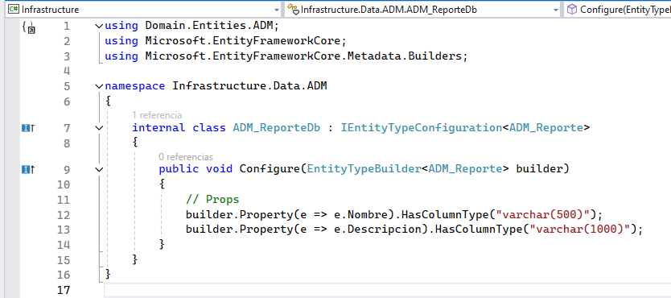

Manual para creación de entidades
Para crear y gestionar tablas en la base de datos mediante el uso de entidades en C#, seguimos un proceso estructurado que involucra la definición de la entidad, la configuración de la misma, y la aplicación de migraciones. A continuación, se describen los pasos en detalle.
Definición de la Entidad
El primer paso es definir la clase que representará la entidad. Esta clase se mapea a una tabla en la base de datos y sus propiedades se corresponden con las columnas de esa tabla.
Crea una nueva clase en el espacio de nombres correspondiente e implementar la interfaz IEntity.
El nombre de la entidad debe empezar con el área al que corresponde: en este caso ADM_.
Definición de entidad ADM_Reporte:
Definición de entidad ADM_ReportePieFirma:

Configuración de la Entidad
Después de definir la entidad, el siguiente paso es configurarla. Esta configuración incluye definir claves primarias, claves foráneas y relaciones entre entidades. Esto se realiza en una clase que implementa IEntityTypeConfiguration<T> (T en este caso debe ser ADM_Reporte).
Esta clase debe tener el mismo nombre que la entidad, pero terminando con Db.
Configuración de entidad ADM_Reporte mediante clase ADM_ReporteDb:

Configuración de entidad ADM_ReportePieFirma mediante clase ADM_ReportePieFirmaDb:
Dentro del método Configure puedes definir propiedades de la entidad. Esto incluye el tipo de dato y longitud.
La clave primaria es el identificador único de la entidad. Puedes definirla utilizando el método HasKey.
Si la entidad tiene relaciones con otras entidades, debes configurar las claves foráneas. Esto se hace utilizando métodos como: HasOne y WithMany para definir relaciones uno a uno o uno a muchos.
Registro de Configuraciones en el Contexto
Se definen múltiples propiedades de tipo DbSet<T>. Cada DbSet representa una tabla en la base de datos y permite realizar operaciones de CRUD (Crear, Leer, Actualizar y Eliminar) sobre las entidades que representan.
El método ADM_Modelo se encarga de aplicar las configuraciones específicas para las entidades del área (ADM). Este método se invoca dentro del método OnModelCreating, donde se define la estructura del modelo de datos.
Generación y Aplicación de Migraciones
Después de definir y configurar las entidades, generas una migración usando Add-Migration y aplicas los cambios a la base de datos con Update-Database.